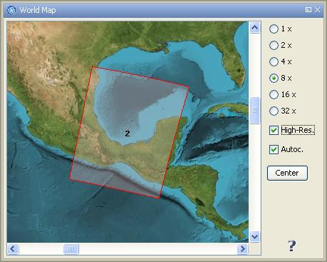

| World Map | |
IMPORTANT NOTE: This help page refers to an outdated user interface. It will be updated for the final BEAM 4.7 release.
When working with satellite data, it is often not obvious at first sight which region of the world is covered by the data product. To facilitate finding the location of the product on Earth, VISAT provides a World Map tool window which displays the product boundary on a Plate Carrée map.
To invoke the World Map simply click on the globe icon in the main toolbar or select World Map from the 'View/Tool Windows' sub-menu. This will open the tool window shown below.

To zoom in and out the view, select one of the zoom levels (1x - 32x) shown on the left side of the window.
If you want to use a high resolution version of the world map image, e.g. for small data products, you can select the High-Res. check box.
When the option Autoc. is selected, the product shape is centered automatically during zoom operations. To bring the product shape to the center back again after panning press the Center button.
Note: The owner of the used world map image is the NASA and it can be obtained at http://visibleearth.nasa.gov.